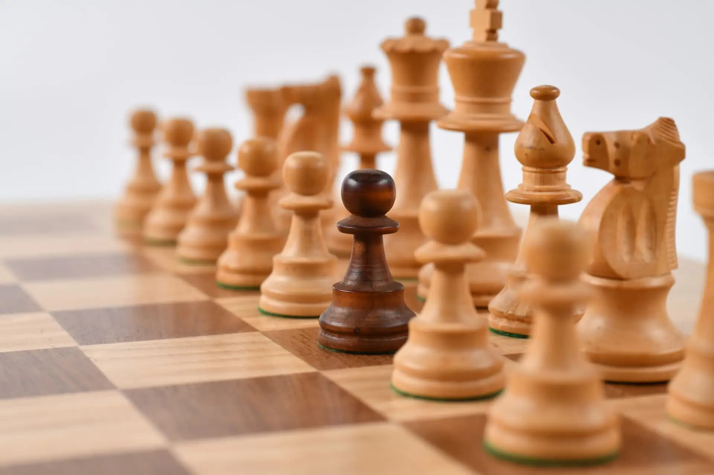

El ajedrez no es solo un juego, es una ciencia y un arte que ha cautivado a millones de personas a lo largo de la historia.
Aprende sobre su historia, estrategias, tácticas y datos curiosos para mejorar tu nivel y disfrutar cada partida.
El ajedrez tiene sus orígenes en el siglo VI en la India, donde se jugaba una versión primitiva llamada "Chaturanga".
Desde allí se expandió a Persia, donde se conoció como "Shatranj". Tras la conquista musulmana, el juego llegó a Europa a través de España y se popularizó en la Edad Media.
En el siglo XV, el ajedrez comenzó a adquirir las reglas modernas, aumentando la movilidad de piezas como la reina y los peones.
En 1886 se celebró el primer Campeonato Mundial de Ajedrez, con Wilhelm Steinitz como el primer campeón oficial.
Hoy en día, el ajedrez es un deporte reconocido internacionalmente, con torneos de élite como el Campeonato Mundial y la Olimpiada de Ajedrez.

En el ajedrez, la estrategia es clave para ganar. Algunas de las más importantes son:
Una respuesta popular a 1.e4, caracterizada por el avance c5. Permite un juego desequilibrado con posibilidades de ataque para ambos bandos.
Las blancas ofrecen un peón en d4 para obtener control del centro y una mejor actividad de piezas.
Busca controlar el centro y presionar la posición negra con movimientos como Bb5.
Una apertura flexible donde las blancas buscan un ataque progresivo sobre el enroque enemigo.
Las tácticas son combinaciones de jugadas que permiten obtener ventajas en la partida. Aquí algunas de las más importantes:
Datos interesantes sobre el ajedrez que quizás no conocías:
Mira las mejores jugadas de ajedrez de la historia:
¿Tienes dudas o quieres aprender más? Escríbenos:
Email: stalinpuma@ajedrezmaestro.com
Síguenos en nuestras redes sociales: